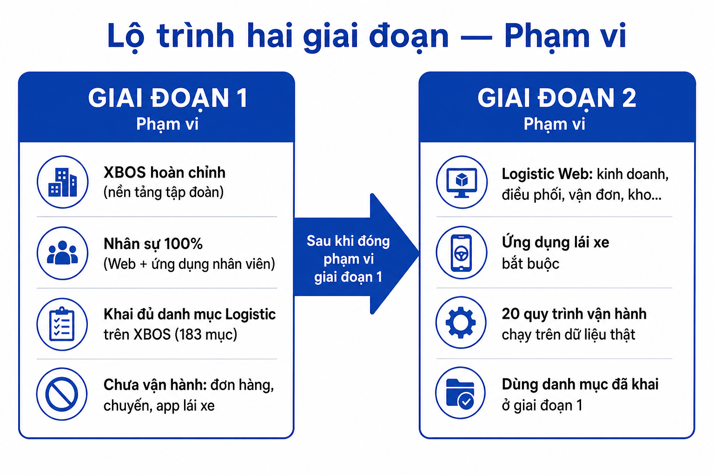
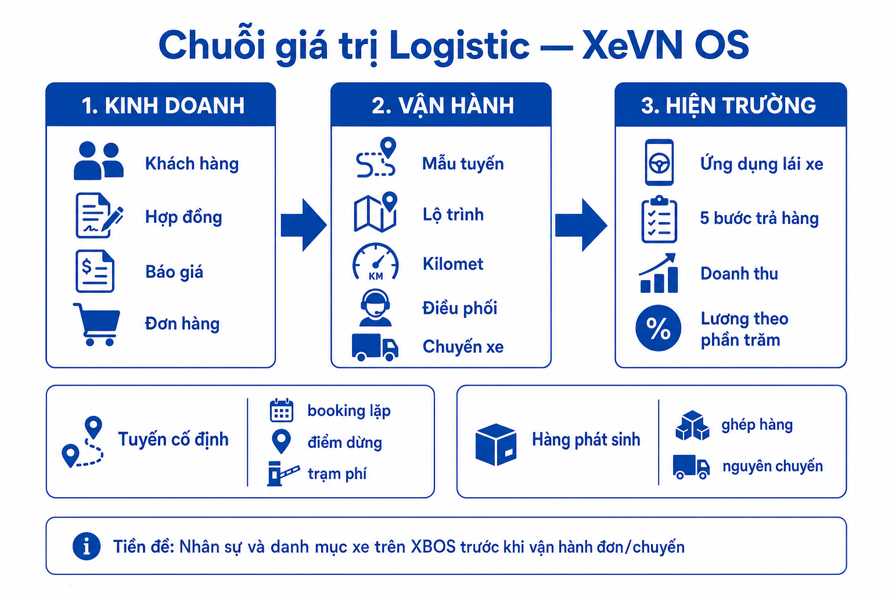
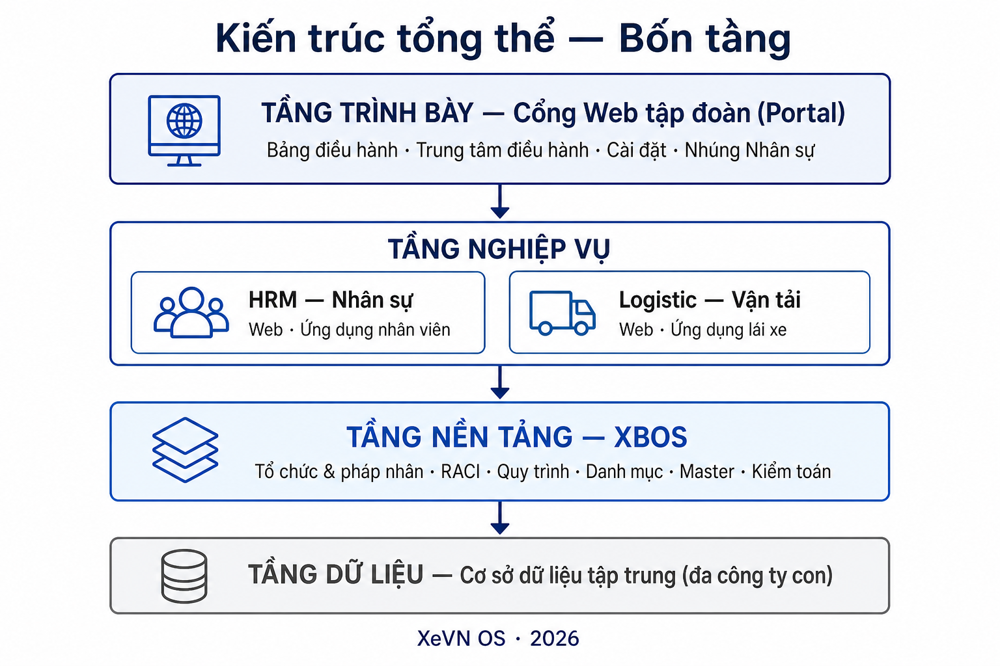
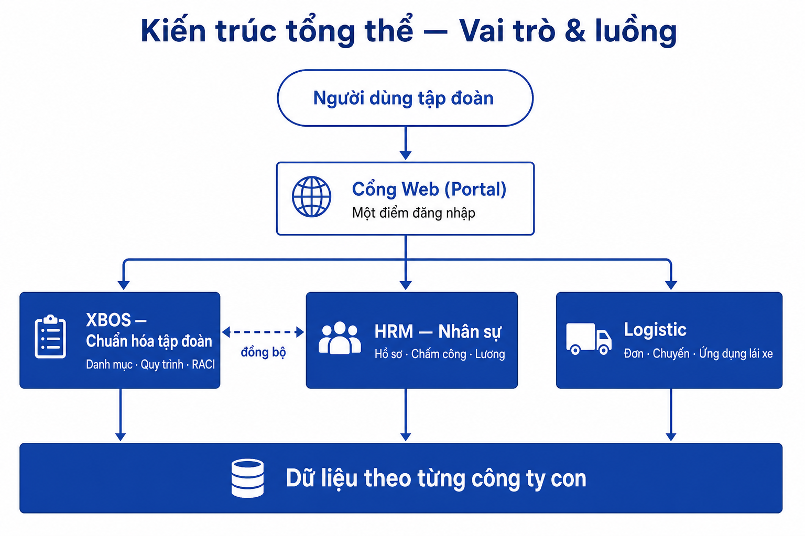

TÀI LIỆU MÔ TẢ HỆ SINH THÁI (BRD — TỔNG QUAN)
XeVN OS
Hệ sinh thái quản trị & vận hành tập đoàn vận tải — Portal · XBOS · HRM · Logistic · Đa tenant
373
Use case
183
Danh mục XBOS
245
UC Phase 1
128
UC Phase 2
Hệ sinh thái quản trị & vận hành tập đoàn vận tải — Portal · XBOS · HRM · Logistic · Đa tenant
XeVN OS vận hành mô hình quản trị tập trung — vận hành phân tán: một lõi XBOS giữ dữ liệu chuẩn; các phân hệ HRM, Logistic tiêu thụ catalog và phản hồi sự kiện về Portal điều hành.
| Thành phần | Vai trò |
|---|---|
| Portal / Command Center | Điểm vào: KPI, inbox duyệt, thiết lập công ty, nhúng module |
| XBOS | Lõi: org, catalog, workflow, RACI, master, tenant scope |
| HRM (Web + Mobile) | 119 UC — vòng đời nhân sự, chấm công, lương, app nhân viên |
| Logistic | 150 UC — KD → điều phối → chuyến → app lái xe (Phase 2) |
| Chỉ tiêu | Số lượng | Ý nghĩa |
|---|---|---|
| Use case (mã duy nhất) | 373 | Mọi việc người dùng làm được — có nhóm, kênh Web/API/Mobile |
| Danh mục cấu hình XBOS | 183 | 72 HRM + 111 Logistic (91 DM + 20 quy trình) |
| Use case Phase 1 (go-live) | 245 | 104 XBOS + 119 HRM + 22 quản trị DM Logistic |
| Use case Phase 2 | 128 | ~100 Web Logistic + 28 app lái xe |
| Phân hệ | Tổng UC | Chi tiết |
|---|---|---|
| XBOS nền tảng thuần | 97 | CC, org, RACI, workflow, master, auth |
| XBOS — DM Logistic | 22 | XBOS-DM-LOG-* — Phase 1 |
| XBOS — DM HRM | 15 | XBOS-DM-HRM-* (trong khối 119 HRM) |
| XBOS — governance CAT | 7 | UC-XBOS-CAT-* |
| Tổng trách nhiệm XBOS | 141 | |
| HRM nghiệp vụ | 104 | API / Web / Mobile (trừ 15 UC DM trên XBOS) |
| HRM tổng | 119 | Gồm 15 UC mobile nhân viên |
| Logistic Web | ~100 | LG-* — Phase 2 |
| App lái xe | 28 | LG-MB-* — bắt buộc go-live |
| Logistic tổng | 150 |
| Đối tượng | Nhu cầu |
|---|---|
| Ban điều hành | KPI đa công ty, cảnh báo, RACI |
| Quản trị / XBOS | Master data, phân quyền, catalog, workflow |
| HR | Vòng đời NV, chấm công, lương — Web + Mobile |
| KD / Điều phối / Lái xe | Chuỗi KD → chuyến → doanh thu/lương % |

Hình 1 — Phase 1: XBOS + HRM + khai 183 DM · Phase 2: Logistic nghiệp vụ
| Phase 1 | Phase 2 | |
|---|---|---|
| Mục tiêu | XBOS + HRM 100%; khai 183/183 DM | Logistic Web + app lái xe |
| Use case | 245 | 128 |
| Danh mục | 183 phát hành | Dùng DM đã khai P1 |
| Ngoài phạm vi | Đơn/chuyến thật, app lái | — |
| Khối | UC | DM |
|---|---|---|
| XBOS hoàn chỉnh | 104 | 18 mẫu DM chung |
| Danh mục Nhân sự | 15 + 7 governance | 72 |
| Danh mục Logistic (chưa vận hành đơn) | 22 | 111 |
| Nhân sự 100% (Web + Mobile) | 119 | — |
| Nhóm | Số UC | Nội dung |
|---|---|---|
| Nền tảng & đồng bộ | 9 | Health, catalog sync, audit |
| Master & KPI | 12 | Chức danh, NCC, KH, loại xe, rollup |
| Tổ chức & phân quyền | 6 | Pháp nhân, phòng ban, RBAC |
| Quy trình phê duyệt | 9 | Canvas, phiên chạy, inbox |
| Tài sản | 6 | Yêu cầu tài sản 5 bước kế toán |
| Xác thực / phạm vi | 7 | Login, tenant, membership |
| Command Center | 15 | Thiết lập công ty, RACI, hộp thư |
| Quản trị DM chung | 18 | XBOS-DM-01…18 |
| Governance DM HRM | 7 | UC-XBOS-CAT-* |
| Khác (RACI, dashboard…) | 15 |
| Nhóm | Số UC | Kênh |
|---|---|---|
| Quản trị DM trên XBOS | 15 | XBOS |
| Nền tảng & đồng bộ | 8 | API |
| Chấm công & đơn từ | 13 | API / Web / Mobile |
| Yêu cầu dịch vụ & thông báo | 8 | API / Web / Mobile |
| Nhân sự, lương, tuyển dụng, HĐ | 24 | API / Web |
| Metadata & import/export | 18 | API / Web |
| Công việc, đánh giá, hồ sơ xe | 9 | API / Web |
| Nhúng Command Center | 8 | Web Portal |
| Ứng dụng Mobile nhân viên | 15 | Expo iOS/Android |
@xe.vn; server trả memberships[]; JWT (tenant_id, company_id, employee_id); không hardcode tenant trên app. 7 nhóm UC: auth (3), chấm công (3), đơn (5), duyệt (2), lương (3), thông báo (3), cài đặt (3).

Hình 2 — Kinh doanh → Điều phối → Chuyến → App lái → Doanh thu/Lương
| Nhóm | Số UC | Phase |
|---|---|---|
| Quản trị DM trên XBOS | 22 | 1 |
| Kinh doanh đầu chuỗi | 8 | 2 |
| Master tuyến & lộ trình | 8 | 2 |
| Điều phối | 16 | 2 |
| Vận đơn, đội xe, kho, giá… | ~70 | 2 |
| App lái xe (5 bước trả hàng + lương %) | 28 | 2 |
| Thứ tự | Nhóm | UC |
|---|---|---|
| 1 | Master tuyến / lộ trình / trạm phí | 8 |
| 2 | KD → báo giá → HĐ → đơn | 14 |
| 3 | Điều phối + vận đơn + chuyến | 25 |
| 4 | Đội xe + tuân thủ + đối tác | 19 |
| 5 | Kho + giá + đối soát | 17 |
| 6 | Mobile lái xe | 28 |
| Phân hệ | DM nghiệp vụ | Quy trình | Tổng |
|---|---|---|---|
| HRM | 72 | — | 72 |
| Logistic | 91 | 20 | 111 |
| Cộng | 163 | 20 | 183 |
| Nhóm | Mục | Nhóm | Mục |
|---|---|---|---|
| Tổ chức & pháp nhân | 6 | Tuyển dụng | 6 |
| Chức danh & phân quyền | 8 | Hồ sơ & tài liệu NV | 3 |
| Biểu mẫu hồ sơ NV | 12 | Hồ sơ xe (du lịch) | 9 |
| HĐ, chấm công, lương | 10 | Quy trình & phê duyệt | 5 |
| Master dùng chung | 4 | RACI & CC HRM | 9 |
91 danh mục nghiệp vụ (tổ chức, địa điểm, dịch vụ 3 cấp, phương tiện, khách hàng, điều phối, kho, KPI…) + 20 quy trình vận hành định nghĩa trên XBOS (chạy thật khi Phase 2 có đơn/chuyến).

Hình 3 — Trình bày · Nghiệp vụ · Nền tảng · Dữ liệu

Hình 4 — Portal / XBOS / HRM / Logistic — ranh giới trách nhiệm
| Khái niệm | Mô tả |
|---|---|
Master xevn | Holding — nhiều company |
Member xe-du-lich | Công ty thành viên — map qua HRM employees |
@xe.vn — vd. du-lich.ceo@xe.vn | |
| Portal auth | XBOS membership |
| Mobile auth | HRM API — memberships từ hồ sơ NV |
XBOS-DM-LOG-* — checklist đủ DM| # | Giá trị | Chỉ số |
|---|---|---|
| 1 | Một chuẩn — nhiều công ty | 183 DM + tenant scope |
| 2 | Truy vết & kiểm soát | Audit, phiên bản catalog |
| 3 | Chuỗi KD → vận hành | Logistic P2 trên nền P1 |
| 4 | Minh bạch lái xe | App: doanh thu, lương/chuyến |
| 5 | Mở rộng theo khung | 373 UC đã định nghĩa |
| Hạng mục | Trạng thái (05/2026) |
|---|---|
| 373 UC + 183 DM — phân tích | ✅ Hoàn thành |
| XBOS + Portal Command Center | 🔄 Đang hoàn thiện |
| HRM Web + Mobile pilot | 🔄 ~50% |
| Logistic nghiệp vụ | 📋 Phase 2 |
Chi tiết đầy đủ: docs/ecosystem/MO_TA_HE_SINH_THAI_XEVN.md · Pilot: docs/hrm/HUONG_DAN_DANG_NHAP_PILOT.md